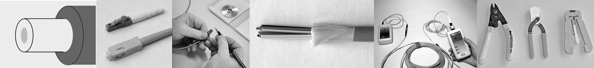
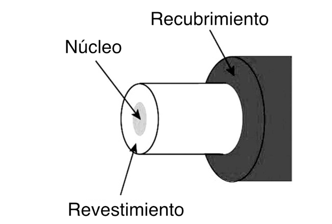
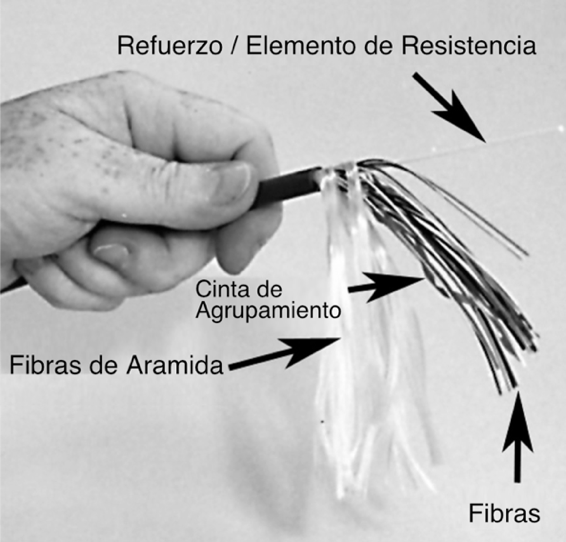
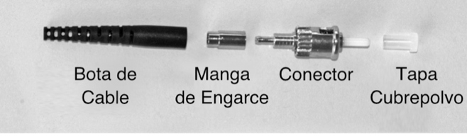
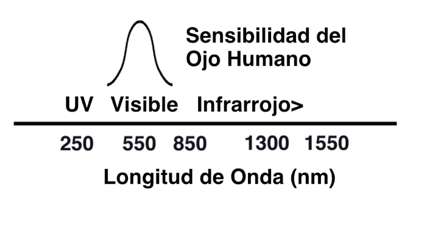
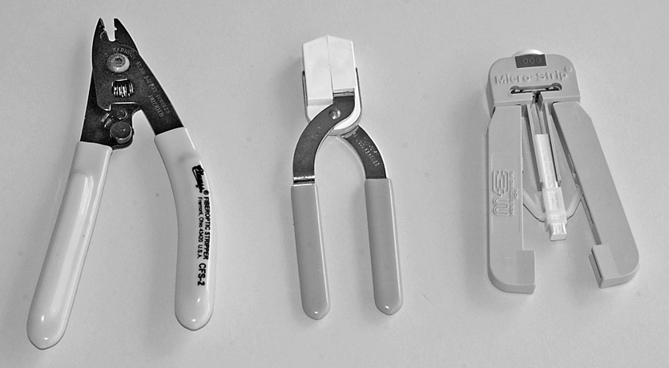
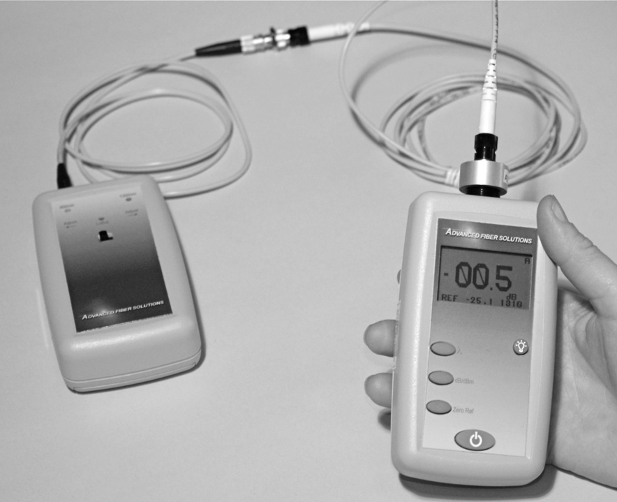

Libro FOA · Capítulo 02
Terminología de la fibra óptica
El vocabulario del libro: fibras, cables, conexiones, medidas y herramientas.
En este capítulo
Qué aprenderás
- El lenguaje de la fibra óptica
- Sistemas de medida utilizados en fibra óptica
- Términos especializados en fibra óptica
- La clave para entender cualquier tecnología es comprender su lenguaje: la jerga. Hemos empezado este libro con una visión general de la jerga de la fibra para introducirle en el lenguaje de la fibra óptica y ayudarle a entender lo que va a leer en el libro. Le sugerimos que lea esta sección primero para ayudarle a comprender el resto del libro y consultarla cuando encuentre un término que no reconozca.

¿Qué es la Fibra Óptica?
Las comunicaciones por fibra óptica consisten en enviar señales de un lugar a otro en forma de luz modulada guiada a través de finísimas fibras de vidrio o plástico. Estas señales pueden ser analógicas o digitales y de voz, datos o vídeo. La fibra puede transportar más información a distancias más largas en menos tiempo que cualquier cable de cobre o método inalámbrico. Es potente y muy rápida, y ofrece más ancho de banda y capacidad de distancia que cualquier otra forma de comunicación.
El Sistema Métrico
La fibra óptica, como tecnología internacional, utiliza el sistema métrico como sistema estándar de medida. Algunos de los términos más utilizados son:
Metro: 3.28 pies, 39.37 pulgadas. Las distancias de los cables de fibra óptica suelen ser expresado en metros o kilómetros.
Kilómetro: 1,000 metros / 3.281 pies / 0.62 millas.
Micrón: 1/1,000,000 de metro. 25 micrones equivalen a 0.001 pulgadas. Este es el término común de medida para los diámetros de fibra, la mayoría de los cuales son de 125 micrones de diámetro exterior.
Nanómetro: Mil millonésima parte de un metro. Este término se utiliza habitualmente en la industria de la fibra óptica para expresar la longitud de onda de la luz transmitida, por ejemplo 850 o 1300 nm.
Fibra
Fibra óptica: Finos filamentos de vidrio o plástico muy transparentes que guían luz.

Núcleo: El centro de la fibra por donde se transmite la luz.
Revestimiento: La capa óptica exterior de la fibra que atrapa la luz en el núcleo y la guía, incluso en las curvas.
Recubrimiento o cubierta primaria: Recubrimiento de plástico duro en el exterior de la fibra que protege el cristal de la humedad o de daños físicos. El recubrimiento es lo que se retira de la fibra para terminarla o empalmarla.
Modo: Un único "patrón de campo electromagnético" (piensa en un rayo de luz) que viaja por la fibra.
Fibra multimodo: tiene un núcleo más grande (casi siempre de 50 o 62.5 micrones -una micra es la millonésima parte de un metro-) y se utiliza con fuentes láser o LED a longitudes de onda de 850 y 1300 nm para aplicaciones de corta distancia como redes LAN o cámaras de seguridad.
Fibra monomodo: tiene un núcleo mucho más pequeño, de sólo unas 8-9 micrones, por lo que sólo transmite un modo. Puede recorrer distancias muy largas a velocidades muy altas.
El monomodo se utiliza para telefonía (larga distancia, metropolitana y fibra hasta el hogar) y CATV con fuentes láser de 1310 a 1550 nm.
Identificación de la fibra: Las fibras se identifican por sus diámetros de núcleo y revestimiento expresados en micrones (la millonésima parte de un metro), por ejemplo, fibra multimodo de 50/125 micrones o fibra monomodo de 9/125 micrones. La mayoría de las fibras multimodo y monomodo tienen un diámetro exterior de 125 micrones, unas 0.005 - 5 milésimas de pulgada, un poco más grande que un cabello humano. Las normas internacionales sobre fibras establecen especificaciones detalladas que también incluyen la capacidad de ancho de banda u otras características especiales.
Fibra óptica de plástico (POF): es una fibra multimodo de núcleo grande (normalmente 1 mm) que puede utilizarse para redes cortas de baja velocidad. La POF se utiliza en equipos HiFi de consumo y como parte de una norma para sistemas de comunicación de vehículos llamada MOST.
Cable de Fibra Óptica
Cable: El cable proporciona protección a las fibras frente a la tensión durante la instalación y frente al entorno una vez instalado. Los cables pueden contener de una a cientos de fibras en su interior. Los hay de tres tipos: de búfer ajustado, con un grueso revestimiento de plástico sobre las fibras para protegerlas, que se utilizan sobre todo en interiores; de tubo holgado, en los que las fibras sólo tienen un revestimiento primario de búfer y están dentro de tubos de plástico; y de cinta, en los que las fibras están formando cintas para permitir la instalación de cables pequeños con el mayor número de fibras.

Cubierta exterior o chaqueta: La cubierta resistente mas exterior del cable. Los cables instalados en el interior de edificios deben cumplir la normativa contra incendios utilizando materiales de cubierta especiales.
Elementos de resistencia: Fibras de aramida (Kevlar es el nombre comercial de Dupont) utilizadas como elementos de resistencia en el cable para permitir su tracción. El término es también se utiliza para la varilla de fibra de vidrio de algunos cables, con el fin de endurecerla y evitar que se retuerza.
Armadura: Disuade a los roedores de dañar el cable masticándolo.
Instalaciones en Planta Externa
Las instalaciones en plantas exteriores se dividen en cuatro categorías generales, en función de la colocación del cable. Cada una de ellas requiere tipos de cable elegidos para la instalación y equipos especializados para su colocación.
Subterráneos: Cables colocados bajo tierra en conductos, a menudo dentro de conductos interiores introducidos en el conducto. Los cables también pueden soplarse en conductos instalados mediante zanja o arado.
Directamente enterrado: Cable enterrado sin canalización, colocado en zanjas, arado en el suelo o instalado mediante perforación direccional.
Aérea: Cable colgado por el aire en postes de servicios públicos.
Submarino: Cables colocados bajo el agua, incluidos los de aguas poco profundas como lagos o ríos, así como los utilizados para cruzar océanos.
Terminaciones y Empalmes
Conector: Dispositivo no permanente para conectar dos fibras en una unión no permanente o conectar fibras a equipos. Se espera que los conectores se desconecten ocasionalmente para realizar pruebas o cambiar el enrutado del enlace.

Empalme: unión permanente entre dos fibras que se utiliza principalmente para concatenar (unir) fibras largas en instalaciones de planta exterior y acoplar pigtails o latiguillos para terminarlas.
Empalme mecánico: Un empalme en el que las fibras están alineadas y sujetas por medios mecánicos.
Empalme por fusión: Empalme creado por soldadura o fusión de dos fibras.
Empalmadora por fusión: Instrumento que empalma fibras fusionándolas o soldándolas, normalmente por arco eléctrico.
Hardware: Las terminaciones y empalmes requieren hardware para su protección y gestión: paneles de conexión, cierres de empalme, etc.
Especificaciones de Rendimiento de la Fibra
Atenuación: Reducción de la potencia óptica a su paso por una fibra, que suele expresarse en decibelios (dB). En el caso de las fibras, se habla de coeficiente de atenuación o atenuación por unidad de distancia, en dB/km. Véase pérdida óptica.
Ancho de banda: gama de frecuencias de señal o velocidad binaria dentro de la cual funcionará un componente, enlace o red de fibra óptica.
Decibelios (dB): Unidad de medida de la potencia óptica que indica la potencia relativa. Por ejemplo, 3 dB es un factor de dos, 10 dB un factor de diez. Los dB negativos indican pérdida, por lo que -10 dB significa una reducción de potencia de 10 veces, -20 dB significa otras 10 veces o 100 veces en total, -30 significa otras 10 veces o 1000 veces en total y así sucesivamente.
dB: Potencia óptica referenciada a un nivel cero arbitrario, utilizada para medir pérdidas.
dBm: Potencia óptica referenciada a 1 milivatio, utilizada para medir la potencia óptica absoluta de los transmisores o en los receptores. Véase potencia óptica.
Pérdida óptica: La cantidad de potencia óptica que se pierde cuando la luz se transmite a través de la fibra, empalmes, acopladores, etc., expresada en "dB".
Potencia óptica: se mide en "dBm", o decibelios referidos a un milivatio de potencia. Mientras que la pérdida es una lectura relativa, la potencia óptica es una medida absoluta, referenciada a estándares. Se mide la potencia absoluta para comprobar transmisores o receptores y la potencia relativa en "dB" para comprobar pérdidas.
Dispersión: Dispersión del pulso causada por los modos en la fibra multimodo (dispersión modal), la diferencia de velocidad de la luz de diferentes longitudes de onda (CD o dispersión cromática en fibra multimodo o monomodo) o la polarización (PMD o dispersión modal de polarización en monomodo).
Dispersión (Scattering): El cambio de dirección de la luz tras chocar con pequeñas partículas que causa la mayor parte de las pérdidas en las fibras ópticas y se utiliza para realizar mediciones mediante un OTDR.
Longitud de onda: Término que designa el color de la luz, generalmente expresado en nanómetros (nm) o micrones (m). La fibra se utiliza mayormente en la región infrarroja, donde la luz es invisible para el ojo humano. La mayoría de las especificaciones de la fibra (atenuación, dispersión) dependen de la longitud de onda.

Herramientas
Cortadora de jacket o desforradora: Una cortadora para quitar la cubierta gruesa exterior de los cables.
Pelador de fibra: Un decapante (removedor de capa) preciso que se utiliza para eliminar el recubrimiento primario o secundario de la propia fibra para su terminación. Existen tres tipos de uso común, denominados por sus nombres comerciales (de izquierda a derecha): "Miller Stripper", "No-Nik" y "Micro Strip".

Cortadora (Cleaver): Una herramienta que "rompe" con precisión la fibra para producir un extremo plano para pulido o empalme.
Escriba: Herramienta dura y afilada que raya la fibra para permitir el hendido.
Disco de pulido: para conectores que requieren pulido, el disco mantiene el conector alineado con la lija de pulido.
Lija de pulido: Lija de grano fino utilizada para pulir el extremo de la férula del conector.
Crimpadora: Herramienta que engarza el conector a las fibras de aramida del cable para añadir resistencia mecánica.
Empalmadora por fusión: Un instrumento que suelda dos fibras juntas en un permanente conjunta.
Equipos de Prueba de Fibra Óptica
Medidor de potencia óptica: Instrumento que mide la potencia óptica del extremo de una fibra.
Fuente de luz: instrumento que utiliza un láser o un LED para enviar una señal óptica a la fibra con el fin de comprobar la pérdida de la fibra o del cable.
Equipo de prueba de pérdidas ópticas (OLTS): Instrumento de medición que incluye un medidor y una fuente utilizados para medir la pérdida de inserción de plantas de cables instaladas o cables individuales. También se denomina medidor de fuente de luz y potencia (LSPM).

Cables de prueba de referencia: cables cortos de una sola fibra con conectores en ambos extremos, utilizados para probar cables desconocidos. Un cable de lanzamiento se conecta a la fuente y se utiliza para establecer la potencia de referencia para las mediciones de pérdidas, y un cable de recepción se conecta al medidor de potencia.
Adaptador de empalme: también llamado casquillo de empalme o acopladores, permiten que dos cables con conectores para acoplar.
Trazador de fibra: Una fuente de luz visible (LED o linterna) que permite comprobar visualmente la continuidad y trazar las conexiones correctas, como la polaridad del conector dúplex.
Localizador visual de averías: Fuente de luz láser visible de alta potencia que permite realizar pruebas de continuidad, rastrear fibras y localizar averías cerca del extremo del cable.
Microscopio de inspección: se utiliza para inspeccionar la superficie final de un conector en busca de fallos como arañazos, pulido o suciedad.
Reflectómetro óptico de dominio temporal (OTDR): Instrumento que utiliza luz retrodispersada para tomar una foto instantánea de una fibra óptica que puede utilizarse para medir el largo de la fibra, la pérdida por empalme, la atenuación de la fibra y para la localización de fallos en la fibra óptica desde un solo extremo del cable.
Comprobadores especializados: Las redes de larga distancia pueden necesitar pruebas de dispersión cromática (CD) y dispersión por modo de polarización (PMD). Los sistemas que utilizan multiplexación por división de longitud de onda pueden necesitar pruebas de atenuación espectral. Cada factor de rendimiento tiene un comprobador especializado para esa especificación.
Preguntas de Repaso
Verdadero/Falso
Indique si la afirmación es verdadera o falsa.
______ 1. Las fibras ópticas pueden transmitir señales analógicas o digitales.
______ 2. La fibra monomodo tiene un núcleo más pequeño que la fibra multimodo.
Elección múltiple
Identifique la opción que mejor complete el enunciado o responda a la pregunta.
______ 3. En una fibra óptica, la luz se transmite a través del/la _________.
- Núcleo
- Revestimiento
- Recubrimiento
- Chaqueta
______ 4. El diámetro de una fibra óptica se mide tradicionalmente en __________.
- Metros
- Milímetros
- Micrones (micrómetros)
- Nanómetros
______ 5. Los rayos de luz transmitidos en fibra multimodo se denominan.
- Reflexiones
- Refracciones
- Ondas
- Modos
______ 6. La pérdida de una fibra o de cualquier fibra en un cable se mide en __________.
- dB
- dBm
- milivatios
______ 7. 10 dB corresponde a un factor de __________ en potencia.
- 2
- 10
- 20
- 100
______ 8. Un pelador de fibra elimina el ________ de la fibra.
- Núcleo
- Revestimiento
- Recubrimiento protector o amortiguador
______ 9. ___________ protege la fibra de cualquier daño.
- Recubrimiento primario
- Elementos de resistencia de fibra de aramida
- Chaqueta
- Todos los anteriores
______ 10. ¿Qué instrumento de prueba de fibra óptica utiliza luz retrodispersada para medidas?
- OLTS
- OTDR
- VFL
- Rastreador
______ 11. La longitud de onda de la luz utilizada para la mayoría de los sistemas de fibra óptica está en el región ______ y _____ al ojo humano.
- Ultravioleta, invisible
- Solar, visible
- Infrarrojos, invisibles
Estudios y Proyectos Adicionales
Consulta los sitios web, catálogos u hojas de datos de los fabricantes para ver qué productos de fibra óptica tienen disponibles. Comprueba si utilizan una terminología diferente y si se basa en nombres comerciales.